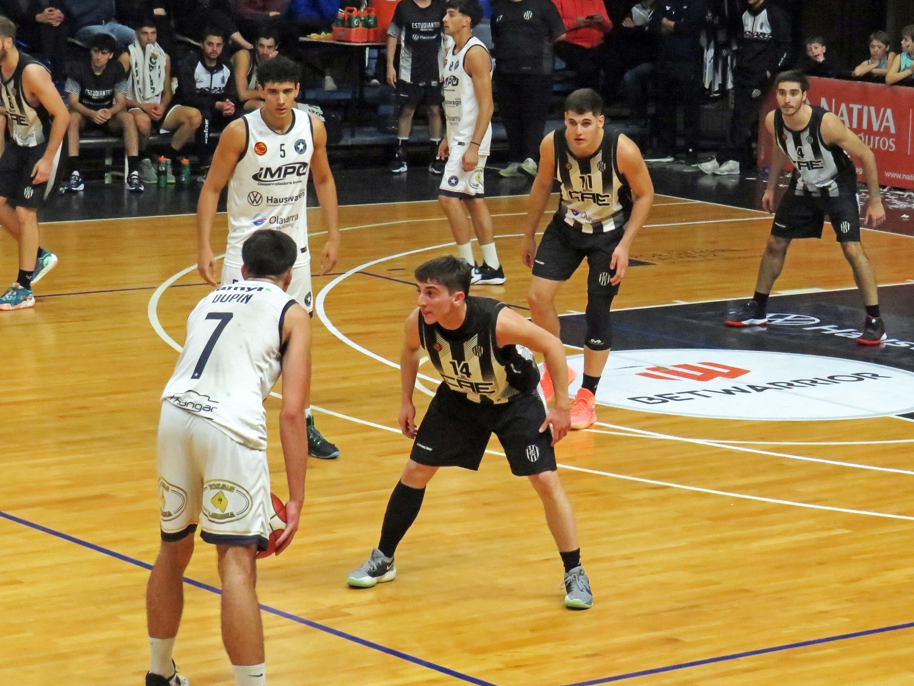

Racing le ganó 79 a 62 a Estudiantes en una nueva edición del clásico del básquet local, en el partido
correspondiente a la fecha 20 (la última) de la zona Sudeste de la Liga Federal. El triunfo le sirve a los de la
estrellita para quedar cuartos en la tabla, detrás de Unión de Mar del Plata, All Boys y Ferro (ambos de La
Pampa).
Nicolás Lorenzo, que estuvo insistente y muy certero desde la línea de tres puntos, fue el máximo anotador del
Chaira y del encuentro con 27 puntos, seguido por Tomás Pérez (CAE), autor de 19 puntos. Matías Sesto (CAE)
anotó 17 y Ariel Weisbeck (RAC) sumó 15 puntos.
Estudiantes arrancó arriba en el marcador y lo pudo sostener solamente durante los primeros minutos del primer
cuarto. Pero Racing comenzó a controlar el trámite del juego y también se puso arriba en el conteo, desde
entonces y hasta el final del partido.

Los espectadores fueron el mejor condimento del clásico: los hinchas de Racing llegaron en cantidad al “Parque
Carlos Guerrero” e hicieron sentir su aliento. Por su parte, una importante cantidad de hinchas del albinegro
también dijeron presentes para acompañar a su equipo.
Así concluye la etapa regular de la Liga Federal, con una nueva victoria de Racing ante su clásico rival. Los
dirigidos por Matías Orlando deberán enfrentar ahora a Atenas de La Plata en una semana, en condición de
visitante.
En tanto, Estudiantes (que terminó en octavo lugar en la tabla) deberá disputar la Reclasificación: recibirá el
próximo lunes a Independiente de Tandil en el Maxigimnasio.
SÍNTESIS DEL PARTIDO
ESTUDIANTES (62): Rosso 4, Sesto 17, Masson 6, Pérez 19 y Piccinelli 3 (FI), San Martín 2, Dilascio 6, Callegaro
2 y Vasallo 3. DT: Manuel González.
RACING (79): Weisbeck 15, Macrini 6, Lorenzo 27, Tambucci 9, Delgado 5 (FI), Dupín 9, Silber, Fornes, Gómez
Leppe 8, Leal, Encinas y Melo. DT: Matías Orlando.
Parciales: 18-21; 31-39; 39-54 y 62-79.
Estadio: Maxigimnasio “Parque Carlos Guerrero”.